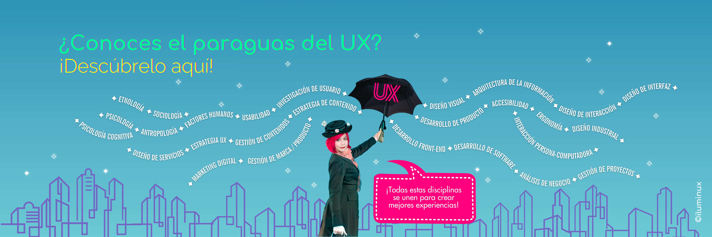

👩‍🚀 Sobre mÃ
Hola, soy Lumina, diseñadora UX/UI, alquimista digital y visionaria pragmática del laboratorio iLuminux.
Desde este rincón del ciberespacio combino ciencia, intuición y tecnologÃa para crear experiencias significativas, accesibles y con alma.
Creo en el diseño que observa el universo del usuario, experimenta sin miedo y despega hacia soluciones que impactan. ğŸ”✨🚀
“Mis clientes son las constelaciones, y las estrellas... mis usuarios.”